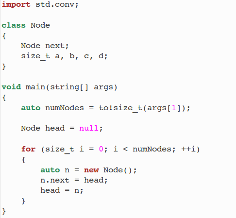
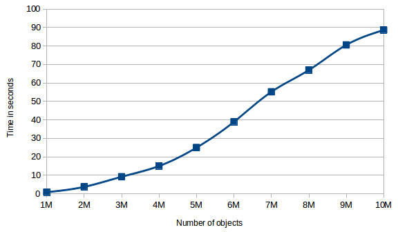

I recently wrote about performance issues I ran into with Higgs. Compilation times are currently unacceptably slow, and I tracked the cause down to performance problems in D's garbage collector. Someone familiar with the GC internals explained that the GC scales poorly, with total collection time increasing quadratically in function of the amount of memory allocated. Despite this poor GC scaling being an obvious flaw, I received criticism from people telling me that my compiler was simply allocating "too many objects" and that I was doing something wrong. That I should be implementing my own custom memory allocation strategies because garbage collectors were always going to be slow.
Despite the nay sayers, Andrei Alexandrescu, co-creator of D, announced that he would be rewriting D's GC to fix these performance problems, and his announcement was well-received in the D community. Unfortunately for me, this GC rewrite doesn't seem to be a top priority, and I'm not sure how many months it will take before a new collector replaces the current one. It seems conceivable that it could take over a year, or that it might happen after I finish my PhD studies. In a sense, the nay sayers are right. With the current GC situation, I have no choice but to circumvent the GC to get acceptable performance.
I decided to do some research into alternative memory management strategies. I first started by looking at the way it's done in Google's V8 JIT. Their strategy is a system of memory "zones". These appear to be large memory arrays in which a pointer is bumped to allocate memory, which is very fast. They generate a function's Abstract Syntax Tree (AST) and it's Intermediate Representation (IR), allocating all node objects into a zone, and then discard all of these objects at once when they are no longer needed. The cost to deallocate an entire zone at once is constant. This strategy is clever, but it isn't sufficient for Higgs. I could see myself using something like this for my AST and IR (and maybe I will), but there are other objects in the system which need more fine-grained deallocation.
Quite possibly, I'll end up implementing object pools with free lists. This wouldn't be quite as blazingly fast as zones, but it would result in less memory waste, and it would be usable for all of the often-allocated kinds of objects in Higgs. The folks on the D forum were kind enough to point me to useful resources on how to manually allocate class instances in D.
Out of curiosity, before seriously considering implementing an object pool, I decided to try and benchmark the D garbage collector. I knew there was a performance issue, but I hadn't precisely quantified it. I was curious to see how much time would be needed to allocate a few million objects, and so I wrote the following test program:

The results, timed on my Core i7 3.4GHz with 16GB of RAM, were as follows:

The curve above is not perfectly quadratic, but if anyone doubted that the D GC has a performance problem, I think that this should be proof enough, with 8 million node allocations taking over a minute on a very recent CPU. In comparison, Higgs itself is able to execute a similar JavaScript benchmark with 10 million objects allocated and initialized in less than 10 seconds.
{kind=link}
{kind=link}